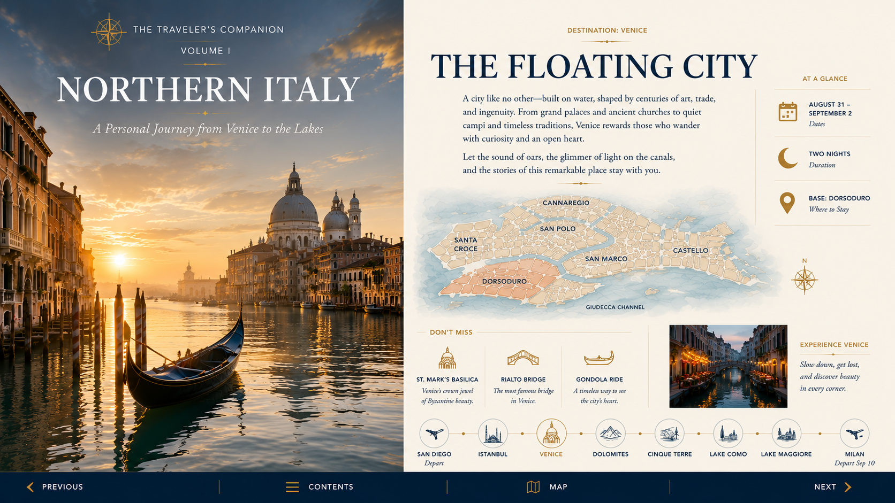
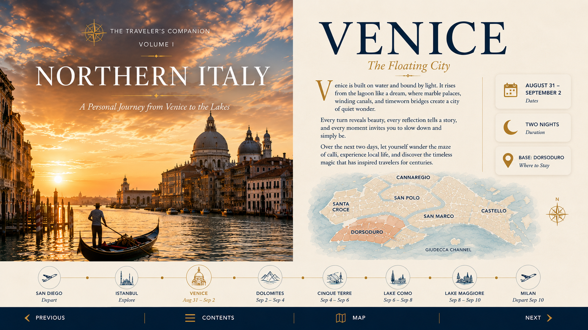
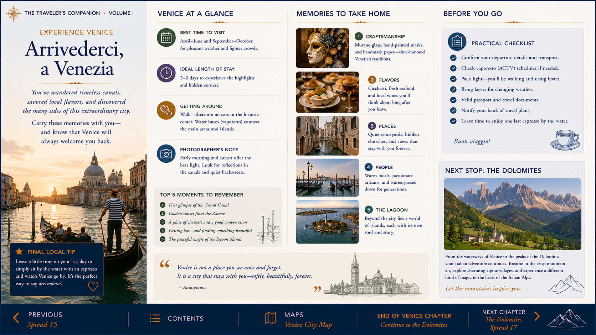

Venice chapter
Two focused days of classic sights, food, quieter neighborhoods and evening atmosphere.
A compact visual companion for Venice, the Dolomites, Cinque Terre, Lake Como and Lake Maggiore—built from the strongest parts of your original guide.

The web edition stays deliberately compact: each destination keeps the best photography and essential planning content, while repetitive images and duplicate material are removed.
The first chapter combines a streamlined web guide with selected original spreads, so it remains attractive and familiar without turning into another oversized book.

Two focused days of classic sights, food, quieter neighborhoods and evening atmosphere.

The same format will carry the journey naturally from the lagoon into the mountains.